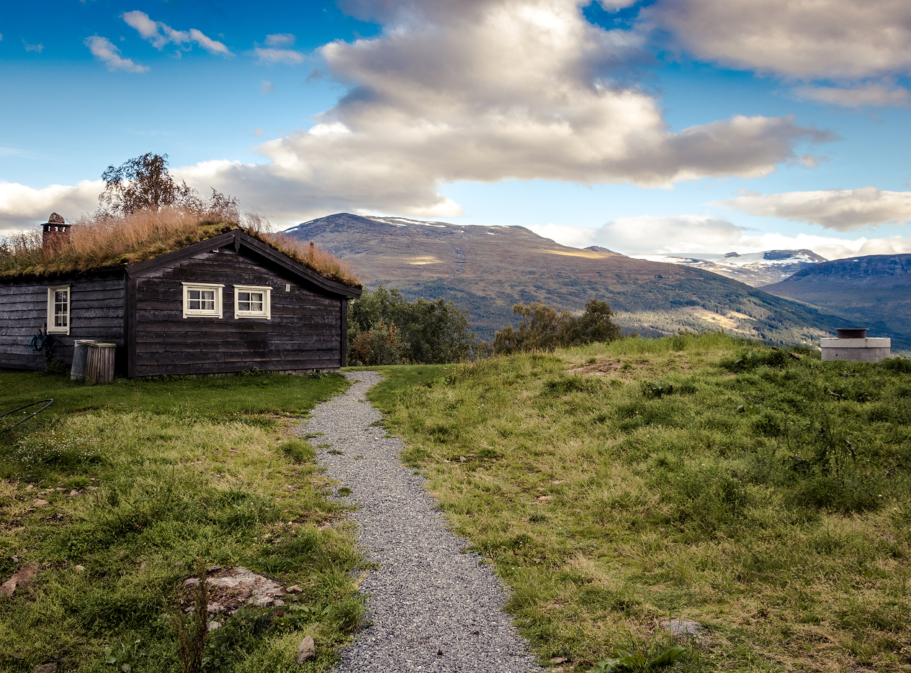
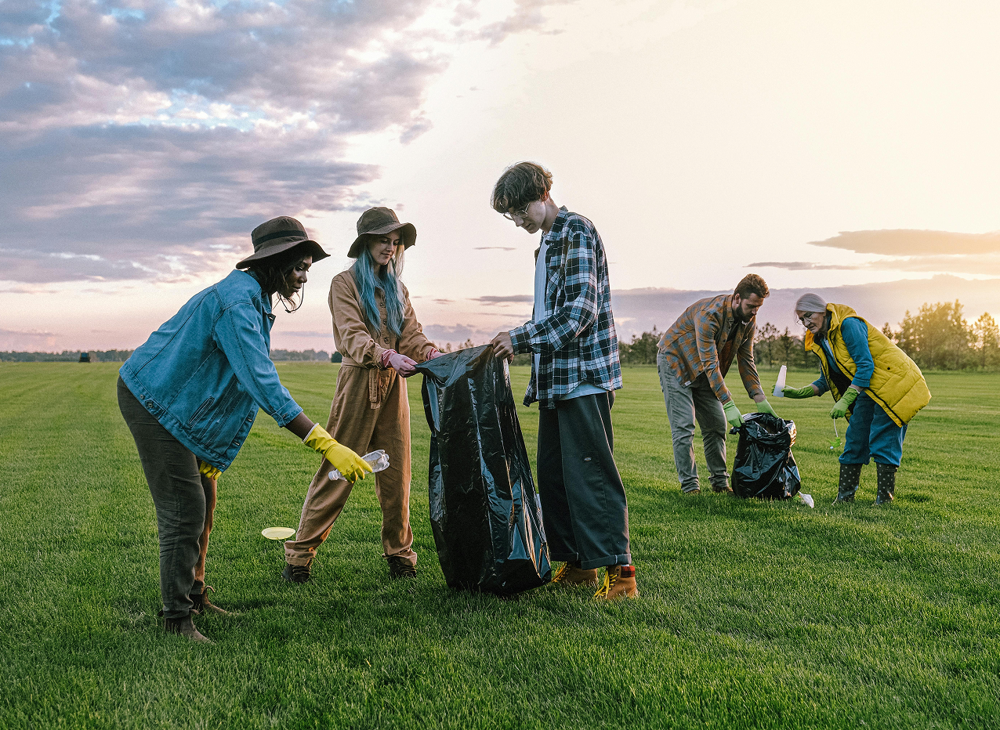
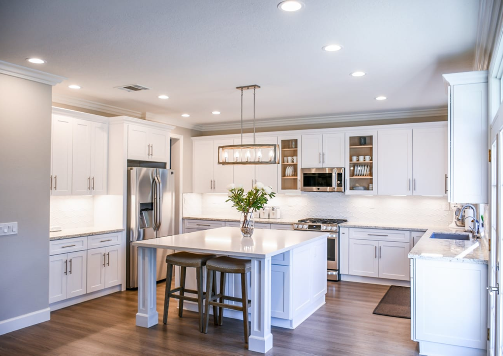

Latest Stories

17.mai - Norges nasjonaldag
17. mai - Norway national day

HYTTA - et hjem borte fra hjemmet
En hytte - et hjem borte fra hjemmet

Den norske dugnadsånden
The Norwegian spirit of voluntary work

Mitt første boligkjøp
My house purchase